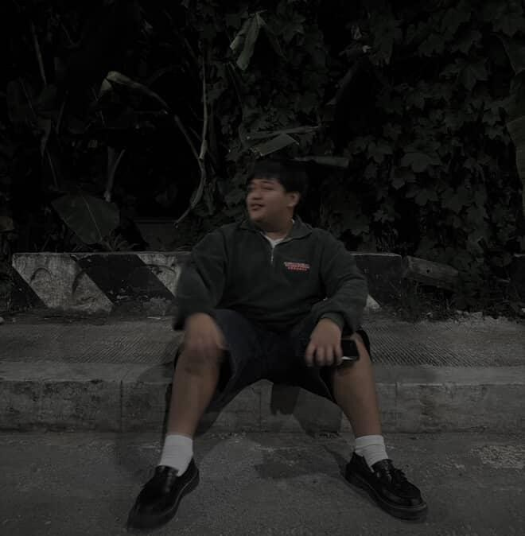

Hi, I'm Mardy Coronado
Student at Laguna State Polytechnic University
About Me
Hello! I'm Mardy Coronado, a passionate and motivated web developer currently studying at Laguna State Polytechnic University. I love creating modern, responsive, and interactive websites that provide great user experiences.
I have a strong foundation in HTML, CSS, and JavaScript, and I enjoy learning new technologies to improve my skills. I'm also certified in TESDA NC II – Computer System Servicing and have completed courses in Python Essentials.
Outside of coding, I enjoy exploring digital design trends, experimenting with creative ideas, and solving challenging problems. My goal is to become a full-stack developer and contribute to projects that make a real impact on users.
Fun facts about me: My favorite song is "Enter Sandman" by Metallica, and my favorite superhero is Spider-Man. 🕷️🎸
I am eager to collaborate with others, continuously learn, and build projects that combine both functionality and creativity.
Hobbies & Sports
Outside of coding, I enjoy both traditional sports and esports. Here are some of my favorites:
Esports: Mobile Legends

Esports: COD